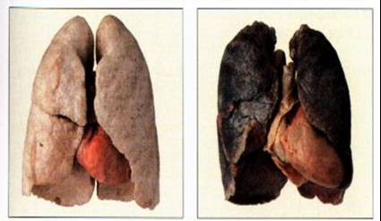

I DANNI DEL FUMO
Il fumo di sigaretta è una miscela di gas (87%), vapore (5%) e particelle solide sospese (8%).
Il fumo derivante dalla combustione di una sigaretta contiene oltre 4 000 composti.
Circa 3 900 di queste sostanze sono gravemente dannose per gli organismi viventi.

Il consumo abituale di sigarette è fattore di cardiopatie, malattie respiratorie e comparse di masse tumorali:
- Broncopneumopatia cronica ostruttiva
- Carcinoma polmonare
- Carcinoma della bocca
- Carcinoma endometriale
- Carcinoma gastrico
- Polmonite interstiziale desquamativa
- Infarto miocardico acuto
- Ictus
- Bronchiolite respiratoria con interstiziopatia
- Malattia di Buerger
- Malattia di Legg-Perthes
NB!!
In alcuni Paesi, come l'Italia, i produttori sono tenuti a inserire nei pacchetti di sigarette messaggi sulla pericolosità del fumo per la salute.
In altri Paesi, i produttori provvedono a farlo volontariamente.
Queste informazioni escludono la responsabilità dei produttori per le malattie causate dal fumo attivo, e la possibilità di richieste di risarcimento danni.
HOME PAGE
LA SIGARETTA
LE MIGLIORI MARCHE